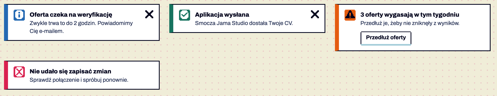
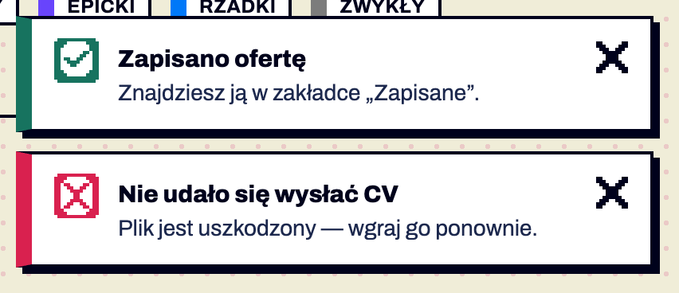

Komponenty / Powiadomienia
Powiadomienia i statusy
testowy Powiadomienia (w treści i wyskakujące) · od 1.7 — brakuje: użycie na 2 ekranach, test z czytnikiem
Komunikat o stanie strony lub wyniku akcji w czterech statusach: informacja, sukces, ostrzeżenie, błąd. W treści (.notice) — stan sekcji lub strony, zostaje; wyskakujące (ppToast()) — potwierdzenie akcji w rogu ekranu. Błąd jednego pola to .field-error (K23), wskazówka bez statusu — callout (K16), błąd wczytania listy — K28. Potwierdzone w dokumentacji S01 §2.7, §6.15.


Anatomia i komponenty składowe
| Część / rola | Wymagana / opcjonalna | Składnik / źródło | Co można zmienić / status |
|---|---|---|---|
| ramka 2 px + lewa krawędź 10 px w kolorze statusu | wymagana | .notice | Potwierdzone w dokumentacji |
| kafelek 28 px z ikoną statusu | wymagany | .notice-icon + i-info/success/warning/error | Potwierdzone w dokumentacji |
| tytuł 15/800 | wymagany | .notice-title | ≤ 6 słów Rekomendacja |
| zdanie | opcjonalne | p | ≤ 2 zdania Rekomendacja |
| akcje | opcjonalne | .notice-actions + .btn-compact | Potwierdzone w dokumentacji |
| zamknij | opcjonalny | .icon-btn[data-dismiss] | Potwierdzone w dokumentacji |
Warianty i zastosowanie
| Oś | Wartość | Kiedy użyć | Co się zmienia | Ograniczenia / status / źródło |
|---|---|---|---|---|
| status | informacja | stan, nie problem | niebieski #2469B3 | Potwierdzone w dokumentacji |
| status | sukces | akcja się udała | zielony #17735F | Potwierdzone w dokumentacji |
| status | ostrzeżenie | wymaga uwagi, nie blokuje | pomarańcz NES #E45C10, znak granatowy | Potwierdzone w dokumentacji nie żółty — żółty = „nowe” |
| status | błąd | akcja się nie udała | czerwony #D9214F | Potwierdzone w dokumentacji |
| miejsce | w treści | nad sekcją, której dotyczy | zostaje | Potwierdzone w dokumentacji |
| miejsce | wyskakujące | potwierdzenie akcji | prawy dolny róg, cień 4 px; sukces/info znikają po 6 s (pauza po najechaniu i fokusie), ostrzeżenie/błąd zostają | Potwierdzone w dokumentacji |
Zachowanie, treści i lokalizacja
Tytuł: czas przeszły dla potwierdzeń („Zapisano ofertę”), opis problemu dla błędów („Nie udało się zapisać zmian”); treść mówi, co zrobić (§6A) Potwierdzone w dokumentacji. Wejście wyskakującego: 200 ms skokowo, bez ruchu przy „ogranicz ruch” Potwierdzone w dokumentacji.
Zalecane i niewskazane
| Zalecane — przykład | Niewskazane — przykład | Powód / status / źródło |
|---|---|---|
| „Aplikacja wysłana” jako wyskakujące po wysłaniu | okno modalne „Sukces!” do zamknięcia | potwierdzenie nie przerywa pracy Rekomendacja |
| błąd zostaje do zamknięcia | błąd znikający po 6 s | użytkownik może go nie przeczytać Potwierdzone w dokumentacji |
| pomarańczowe ostrzeżenie | żółte ostrzeżenie | żółty znaczy „nowe” Potwierdzone w dokumentacji |
| kolor + ikona + tekst | sam kolor krawędzi | WCAG 1.4.1 Potwierdzone w dokumentacji |
Tokeny i style
| Zastosowanie | Token | Tryb / wariant | Wartość | Źródło | Status |
|---|---|---|---|---|---|
| kolor statusu | --status-* | jasny | #2469B3 #17735F #E45C10 #D9214F | S02 | Potwierdzone w dokumentacji |
| kolor statusu | --status-* | ciemny | #0BAFE6 #96E3C9 #E45C10 #F27961 | S02 | Potwierdzone w dokumentacji |
| znak na kafelku | --on-status-* | biały / granat | S02 | Potwierdzone w dokumentacji 4.9–5.7:1 | |
| warstwa | --z-toast | 400 | S02 | Potwierdzone w dokumentacji |
Wymiary, odległości i układ
| Elementy / krawędzie | Wariant | Wartość / relacja | Token | Reguła / źródło / dokładność |
|---|---|---|---|---|
| padding | — | 12 px, lewy 14 px | — | Potwierdzone w dokumentacji |
| kafelek ↔ treść | — | 12 px | — | Potwierdzone w dokumentacji |
| wyskakujące | — | szer. do 400 px, 16 px od krawędzi, odstęp 12 px | — | Potwierdzone w dokumentacji |
Typografia
| Rola tekstu | Styl | Font / weight | Rozmiar | Interlinia | Tracking | Kolor / zachowanie / status |
|---|---|---|---|---|---|---|
| tytuł | — | Archivo 800 | 15 | 20 | — | --ink Potwierdzone w dokumentacji |
| treść | small | Archivo 400 | 14 | 20 | — | --ink-2 Potwierdzone w dokumentacji |
Przykład na żywo
Ta sama sekcja co w examples/komponenty.html — działa na systemie 1.11.0. Przełącz motyw w nagłówku, żeby zobaczyć tryb ciemny.
Statusy i powiadomienia
Cztery statusy: informacja, sukces, ostrzeżenie, błąd — zawsze kolor + ikona + tekst. .notice w treści, ppToast() wyskakuje w prawym dolnym rogu: sukces i informacja znikają po 6 s (pauza po najechaniu), ostrzeżenie i błąd zostają do zamknięcia.
Zwykle trwa to do 2 godzin. Powiadomimy Cię e-mailem.
Smocza Jama Studio dostała Twoje CV.
Przedłuż je, żeby nie zniknęły z wyników.
Sprawdź połączenie i spróbuj ponownie.
Kod przykładu
<section class="ex" id="powiadomienia" aria-labelledby="h-not">
<h2 id="h-not">Statusy i powiadomienia</h2>
<p>Cztery statusy: informacja, sukces, ostrzeżenie, błąd — zawsze kolor + ikona + tekst. <code>.notice</code> w treści, <code>ppToast()</code> wyskakuje w prawym dolnym rogu: sukces i informacja znikają po 6 s (pauza po najechaniu), ostrzeżenie i błąd zostają do zamknięcia.</p>
<div class="grid2">
<div class="notice notice-info"><span class="notice-icon"><span class="icon i-info" aria-hidden="true"></span></span><div class="notice-body"><strong class="notice-title">Oferta czeka na weryfikację</strong><p>Zwykle trwa to do 2 godzin. Powiadomimy Cię e-mailem.</p></div><button class="icon-btn" type="button" data-dismiss aria-label="Zamknij powiadomienie"><span class="icon i-close" aria-hidden="true"></span></button></div>
<div class="notice notice-success"><span class="notice-icon"><span class="icon i-success" aria-hidden="true"></span></span><div class="notice-body"><strong class="notice-title">Aplikacja wysłana</strong><p>Smocza Jama Studio dostała Twoje CV.</p></div><button class="icon-btn" type="button" data-dismiss aria-label="Zamknij powiadomienie"><span class="icon i-close" aria-hidden="true"></span></button></div>
<div class="notice notice-warning"><span class="notice-icon"><span class="icon i-warning" aria-hidden="true"></span></span><div class="notice-body"><strong class="notice-title">3 oferty wygasają w tym tygodniu</strong><p>Przedłuż je, żeby nie zniknęły z wyników.</p><div class="notice-actions"><a class="btn btn-secondary btn-compact" href="#powiadomienia">Przedłuż oferty</a></div></div></div>
<div class="notice notice-error" role="alert"><span class="notice-icon"><span class="icon i-error" aria-hidden="true"></span></span><div class="notice-body"><strong class="notice-title">Nie udało się zapisać zmian</strong><p>Sprawdź połączenie i spróbuj ponownie.</p></div></div>
</div>
<div class="row" style="margin-top:16px">
<button class="btn btn-secondary btn-compact" type="button" data-toast="success">Pokaż sukces</button>
<button class="btn btn-secondary btn-compact" type="button" data-toast="info">Pokaż informację</button>
<button class="btn btn-secondary btn-compact" type="button" data-toast="error">Pokaż błąd</button>
</div>
</section>Właściwości i atrybuty
| Właściwość / atrybut | Typ | Wartości pokazane / opisane | Domyślna | Efekt i zastosowanie | Zależności / status / źródło |
|---|---|---|---|---|---|
| status | klasa | notice-info|success|warning|error | info | kolor + ikona | Potwierdzone w dokumentacji |
| ppToast() | funkcja | {status, title, text, timeout} | timeout 6000 / 0 | wyskakujące | Potwierdzone w dokumentacji S03 ui-controls.js |
| data-dismiss | atrybut | na przycisku | — | zamyka | Potwierdzone w dokumentacji |
Specyfikacja (design.md §6.15)
| Rodzaj | Klasa | Kiedy | Zachowanie |
|---|---|---|---|
| W treści | .notice.notice-info/success/warning/error | stan strony lub sekcji (weryfikacja oferty, wygasające oferty) | zostaje; opcjonalnie button[data-dismiss] (.icon-btn z i-close) i akcje .notice-actions (.btn-compact) |
| Wyskakujące | ppToast({status, title, text}) → .toasts > .notice.toast | potwierdzenie akcji (zapisano, wysłano) | prawy dolny róg, max ~3 linie; sukces/informacja znikają po 6 s z pauzą po najechaniu i fokusie; ostrzeżenie i błąd zostają do zamknięcia i są ogłaszane przez role="alert" |
| Błąd pola | .field-error | walidacja | §6.13 |
Anatomia: kafelek 28 px w kolorze statusu z ikoną 24 px → tytuł 15/800 → zdanie --ink-2 → akcje. Lewa krawędź 10 px w kolorze statusu. .callout-danger z v1.6 zostaje dla krótkich ostrzeżeń w treści; nowe ekrany używają .notice-error.
Cel: WCAG 2.2 AA. Statyczne materiały i testy automatyczne w Chrome nie dowodzą zgodności — miejsca oznaczone „Do testu we wdrożeniu” wymagają testu z czytnikiem ekranu (design.md §0.6).
| Obszar | Ustalenie lub wymaganie | Dowód / status | Kryterium / wzorzec | Jak sprawdzić |
|---|---|---|---|---|
| ogłaszanie | wyskakujące w regionie aria-live="polite"; błąd i ostrzeżenie dodatkowo role="alert" | S03 Potwierdzone w dokumentacji | WCAG 4.1.3 (AA) | czytnik Do testu we wdrożeniu |
| czas | błąd i ostrzeżenie nie znikają same; pauza przy najechaniu i fokusie | Potwierdzone w dokumentacji | WCAG 2.2.1 (A), 2.2.4 (AAA) | ręcznie |
| kolor | ikona i tytuł niosą status | Potwierdzone w dokumentacji | WCAG 1.4.1 | — |
| zamknij | przycisk z aria-label „Zamknij powiadomienie” | Potwierdzone w dokumentacji | WCAG 4.1.2 | czytnik Do testu we wdrożeniu |
Źródła
S01 §2.7, §6.15; S03 ui-controls.js; S20 (sekcja Powiadomienia).